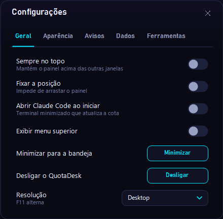

Configurações
O que cada opção das cinco abas de configurações faz: Geral, Aparência, Avisos, Dados e Ferramentas.
Abra pelo botão de configurações no topo do painel.

Geral
| Opção | O que faz |
|---|---|
| Idioma / Language | Automático (segue o Windows), Português ou English. O QuotaDesk reinicia para aplicar. Também fica no menu da bandeja. |
| Sempre no topo | Mantém o painel acima das outras janelas. |
| Fixar a posição | Impede de arrastar o painel. |
| Iniciar com o Windows | Abre o QuotaDesk quando você entra no Windows. |
| Exibir menu superior | Mostra a barra de botões no topo do painel. Ligado por padrão. |
| Minimizar para a bandeja | Esconde o painel; ele continua no ícone da bandeja. |
| Desligar o QuotaDesk | Fecha o app. |
| Resolução | Desktop ou mini monitor 480×320. F11 alterna. |
Aparência
| Opção | O que faz |
|---|---|
| Visual do painel | Escritório (animado), Retrô ou Só os cards. |
| Barra na borda da tela | Anéis, Minimalista ou Desligada. É o resumo sempre à vista, colado na borda do monitor. |
| Manter a barra aberta | Desligado, a barra recolhe e abre ao passar o mouse. Também dá para ligar com o botão direito na barra. |
| Escala | 70%, 80% (padrão), 100% ou 120%. |
| Brilho das bordas | Sem brilho, suave ou normal. |
| Fonte do texto | JetBrains Mono (padrão), Roboto, Exo 2 ou a clássica (Cascadia). Muda na hora. |
| Fonte dos títulos e números | Exo 2 (padrão), Geist Pixel, Jersey 25 ou a clássica, a fonte pixelada original dos cards. Muda na hora. |
Avisos
| Opção | O que faz |
|---|---|
| Som ao pedir atenção | Toca um som quando um agente precisa de você. |
| Avisar pendências | Notifica perguntas e permissões aguardando você. Clique na notificação Aguardando você para ver a lista. |
| Falas reais dos agentes | O balão do personagem mostra o título da tarefa e a última ação ("Executou o comando"). Montado só com nomes de eventos e ferramentas, nunca com o conteúdo dos prompts. |
| Avisar renovação de cota | Notifica quando uma cota renova. |
Dados
| Opção | O que faz |
|---|---|
| Atualização automática | Manual, ou a cada 1, 5, 15 ou 30 min. |
| Atualizar agora | Lê todas as ferramentas de novo. Atalho: F5. |
| Última atualização | Horário da última leitura. |
Ferramentas
Uma caixa por ferramenta. Desmarque as que você não usa para escondê-las.
No fim da aba, Adicionar provedor › Ver guia abre a página Adicionar provedor.
Onde as preferências ficam
Em %LOCALAPPDATA%\AIUsageMonitor\settings.json (ou na pasta do ambiente, veja Ambientes). Atualizar ou reinstalar o QuotaDesk não mexe nesse arquivo. Nunca anexe ele em issues.
Abrir o Claude Code ao iniciar não existe mais. Para atualizar a cota exata do Claude, use o menu do card do Claude › Abrir Claude Code no terminal.